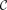

natural transformation from contravariant hom functor as element
1. Proposition
Let  be a locally small category,  an object and a contravariant functor and the contravariant hom-functor.
Then a natural transformation
an object and a contravariant functor and the contravariant hom-functor.
Then a natural transformation
is naturally given by an element  , hence
, hence
2. Proof
we show, that
2.1. construction
2.1.1. a)
2.1.2. b)
2.2. welldefined
2.2.2. b)
2.2.2.1. naturality
we get
since by construction, it holds, that
we may write (using sloppy notation)
Hence it remains to show, that
Since we are working in set, we may element chase, hence for
where since  is contravariant, it holds, that
is contravariant, it holds, that
2.3. bijection
2.3.1. a)
Given a natural transformation  , we get
, we get
Here by element chasing for  and pseudo commutativity of a natural transformation we get
and pseudo commutativity of a natural transformation we get
2.3.2. b)
for , it holds, that